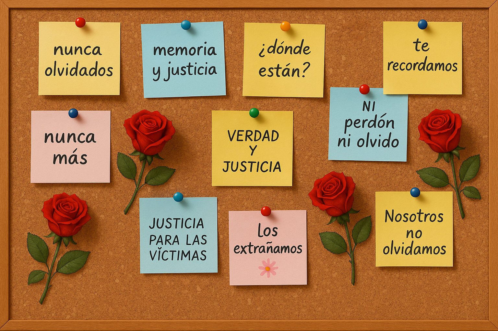

Evaluación de cierre
Esta evaluación no tiene nota y tiene un carácter formativo. Su propósito es ofrecer un espacio de reflexión y síntesis, donde cada estudiante pueda expresar lo que aprendió, pensó o sintió durante la experiencia de trabajo con el cortometraje Historia de un Oso.
Propuesta de cierre en el aula:
- Cada estudiante escribe en un post-it una idea, aprendizaje o reflexión que quiera compartir.
- Todos los post-it se pegan juntos en un mural de la sala para conformar una “memoria colectiva” del curso.
- Como alternativa digital, se puede utilizar un muro virtual (ej. Padlet, Jamboard, Linoit), donde cada estudiante publique su aporte.
Autoevaluación y reflexión personal:
Se puede invitar a cada estudiante a responder brevemente en su cuaderno:
- ¿Qué fue lo más importante que aprendí hoy?
- ¿Cómo me sentí al conversar sobre este tema?
- ¿Qué relación encuentro entre esta historia y nuestra memoria histórica como país?
